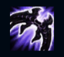
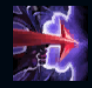
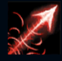
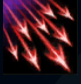
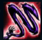

Varus
| Varus The Arrow of Retribution | |
|---|---|
| Release date | 08.05.2012 |
| Class | Marksman,Artillery |
| Positions | Bottom |
| Resource | Mana |
| Range type | Ranged |
| Adaptive type | Physical |
| Base statistics | |||
| Health | 530 – 2077 | Mana | 360 – 921 |
| Health regen. | 3.5 – 12.85 |
Mana regen. | 8 – 21.6 |
| Armor | 27 – 84.8 | Attack damage | 61 – 112 |
| Magic resist. | 30 – 38.5 | Crit. damage | 175% |
| Move. speed | 330 | Attack range | 575 |
Varus a fost odată un asasin din rasa antică darkin. Îi plăcea la nebunie să-și chinuie inamicii cu săgeți, aproape făcându-i să-și piardă mințile înainte de a le da lovitura fatală. A fost întemnițat la finalul Marelui Război al Darkinilor, dar a evadat după câteva secole, zămislindu-și o nouă înfățișare din trupurile a doi vânători ionieni – cei doi l-au eliberat fără să știe, fiind astfel blestemați să poarte arcul ce-i conține esența. Varus îi vânează pe cei ce l-au înlănțuit, vrând să se răzbune violent, însă sufletele pe care le-a înrobit i se opun la fiecare pas. |  |
RĂZBUNARE VIE Când ucide sau participă la o ucidere, Varus primește un bonus temporar la viteza de atac. Bonusul este mai mare dacă inamicul este un campion. |
||
|---|---|---|---|---|
 |
SĂGEATA SFREDELITOARE Varus se pregătește pentru un atac puternic. Cu cât pregătirea este mai îndelungată, cu atât săgeata are raza și daunele mai mari. |
|||
 |
TREMURUL NĂPASTE Pasivă: atacurile de bază ale lui Varus provoacă daune magice bonus și aplică ''Năpasta''. Celelalte abilități ale lui Varus detonează ''Năpasta'', provocând daune magice în funcție de viața maximă a țintei. Activă: Varus își îmbunătățește următoarea ''Săgeată sfredelitoare''. |
|||
|  |
GRINDINĂ DE SĂGEȚI Varus lansează o salvă de săgeți care provoacă daune fizice și pângăresc zona afectată. Zona pângărită scade viteza de mișcare a inamicilor și le reduce capacitatea de auto-vindecare și regenerare. |
|||
 |
LANȚUL ALTERĂRII Varus lansează o spirală care imobilizează primul campion inamic lovit, apoi se extinde spre campionii neinfectați din apropiere, imobilizându-i și pe ei la contact. |